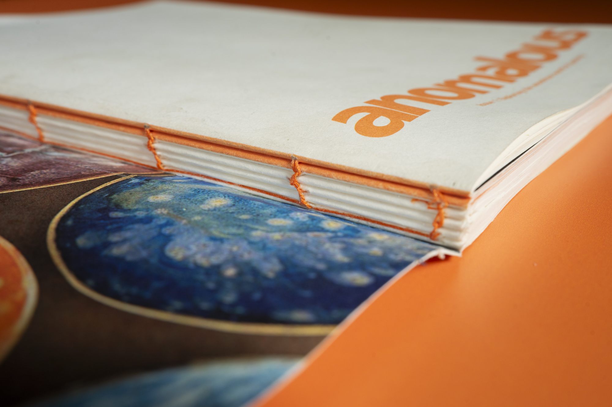

Anomalous is a project completed while studying at RMIT. Anomalous is a biannual magazine that explores my personal journey in spending less time on my smartphone by reconnecting with local communities around Melbourne. Each issue, my goal it to attempt a new hobby, learning from like-minded people, documenting my progress, and getting to know the people who make up this wondrous city.
Brief.
The goal of this assignment was to produce an interview based magazine centred around a topic of subculture that I was passionate about and dictate the style and design around our chosen theme.
Response.
For this project, I chose to focus around spending more time with my local communities in the hopes of disconnecting from social media and spending less time on my phone.
For this magazine I took a lot of inspiration from magazines produced around the 1960s - 1970s, a time where people were a lot more reliant on their local communities.
A strong typographical visual identity was required to reflect the vintage style. Time period typefaces were chosen to reflect the 1960s style.
Paired with a vibrant orange to contrast with the black and white creating a striking visual on the page.
Services.
Publication
Photography